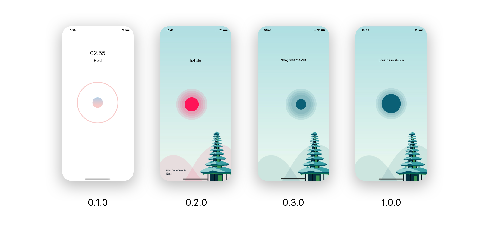

Hirup: Mindful Break
App information
- Category: iOS Native App
- Developer Team: iPhonetastic
App Description
Hirup is a mindful breathing app for remote workers to manage their stress. This activity will use the box-breathing technique and vibration as the guide. The app provides a calming atmosphere and mindfulness medium between work breaks to help you achieve the best of your day.
The Problems
The development of technology has made remote working possible. Connectivity through technologies has made remote workers always on 24/7. This cause them to receive workload even outside working hours and could result to being stressed out. The distress will reduce rational thinking, productivity, work performance and affect overall well-being.
The Process
My role is as an coder and project manager
I led my team in development phase, I use notion kanban board to help me manage the schedule and work plan, monitor the development process and make adjustment as needed. I also facilitate Scrum framework sprint planning, backlog grooming, daily scrums, sprint reviews and sprint retrospectives.
I did a research and select Apple frameworks and APIs for integration to the project. I used Swift to code for iOS and watchOS platform. I use Github for version controll and collaborate with my teammates. I help troubleshoot my teammates technical problems and also responsible for ensuring the app is successfully published to the App Store and Testflight.
Tools and Technology
This is a list of what I developed and used in the development process.
-
UIKit
UIKit is used to create the user interfaces. I chose UIKit because most of my teammates more familiar and comfortable using UIKit.
-
Core Data
Core Data is used to store the app' themes in the device storage. Plans for the future development, Core Data will integrate with CloudKit, so whenever we want to add another theme, we don't need to resubmit the app to the App Store, so that the app can have downloadable themes feature.
-
Core Animation
Core Animation is used to create an animation for the circle to behave like a diaphragm (inflate and deflate).
-
HealthKit
HealthKit is used to create a feature "connect to Apple Health". The purpose is to store users' mindful sessions, so they can check how long they've been practicing mindfulness with Hirup.
-
Gesture/Haptic Feedback
Haptic Feedback implemented to enhance users breathing experience by feeling the vibration. I adjust the strength and rhythm of the vibration to follow the animation and the breathing steps.
-
AVFoundation
To help users feel the calming atmosphere, AVFoundation is used to play the background music and also used to generate audio instruction.
-
UserDefaults
UserDefaults is used to save user settings, such as enable notification, background music, haptic feedback, audio instruction and selected theme. Since settings only contain a small amount of data and not complex, I chose UserDefaults rather than Core Data.
-
UserNotifications
I used UserNotifications to create daily notification to encourage user practice mindfulness.
-
WatchKit
WatchKit is used framework to develop the watchOS features.
-
Localizations
Localization is the process of making your app support other languages. In this case, the app user interface made with English first then localized to Indonesian language.
-
Dark Mode
In this case, Core Data is used to store light and dark theme and also adopt iOS dark mode by using dynamic colors.
-
GitHub
GitHub is used for version control and collaborate with my teammates. I was responsible to manage the branches, merge and solve any conflicts.
Version
Applications are always evolving. In the past 3 months, Hirup has went through changes, upgrade, features additions and removals, etc. Scrum framework is very helpful in the development process. Sprint retrospectives shows great influences in term project, especially in changing the application development strategy to get better results in the next sprint.
We conducted multiple user testing to help improve app usage and meet the user requirements. As a project manager, I analyze the data we got from user testing, create a new product backlog with product owner, conduct a sprint planning meeting with development team and create the schedule and work plan for the sprint.
v0.1.0
This version use the 4-7-8 technique to practice breathing. It use countdown timer with 1 minute, 2 minutes and 3 minutes option. The animation is like a pulse and a simple haptic like heart beat. In this version also have a schedule (to make a reminder) and progress screen (to check mindful time). There is still no background because we want to conduct a user testing for the main feature first.
v0.2.0
In this version it already have the background. We change the breathing technique to the box breathing technique because most of our users feel the 4-7-8 technique is exhausting. Schedule and progress feature also removed because they are not necessary. The animation also much smoother than before, behaving like a diaphragm (inflate and deflate). Watch app has been developed in this version.
v0.3.0
In this version we change the countdown timer into cycles to make it more effective. Provide user preferences such as enabling or disabling the audio instruction, haptic feedback, and background music. Connect to Apple Health is also available on this version. Modified the instruction by changing it to more friendly words. Create notification and add focus detection feature on the result.
v1.0.0
This is the latest version, but not the last. In this version the circle is unmoveable because most of the users find it distracting and made them want to play around with the circle instead of focussing on the breathing. Created tutorial screen for first time user, because most of the users confuse on how to do the activity.
Plans for future development
Make more theme and audio variations (downloadable).
Record audio instruction to make it feel more calmer and not robotic.
Create adjust haptic level on setting.
Create milestone and progress to help encourage user
The Challenges
Applying and facilitating Scrum framework is very challenging for me, because I never apply it before. I learn how to facilitate the scrum meetings, creating a product backlog and also making the work plan from sprint planning. I also found that sprint retrospectives shows great influences in term project, especially in changing the development strategy to get better results in the next sprint.
It was my first time developing an app in watchOS platform. I learn the basic and the infrastructure for creating watchOS apps.
Hirup was my first app to enter the App Store. I tested the app to make sure it didn't crash before submitting it. Unfortunately the app was rejected because of the watchOS app icon background, and this is a new lesson for me so that in the future it will never happen again. Thankfully, after fixing the app icon and resubmitting the app, the review went well and Hirup is now available on the App Store.
Skills Learned
- Facilitate Scrum Framework
- Manage and monitor development process
- Developing watchOS app
- Improve my skills in using iOS frameworks such as Core Data, Core Animation, etc.
- Collaboration